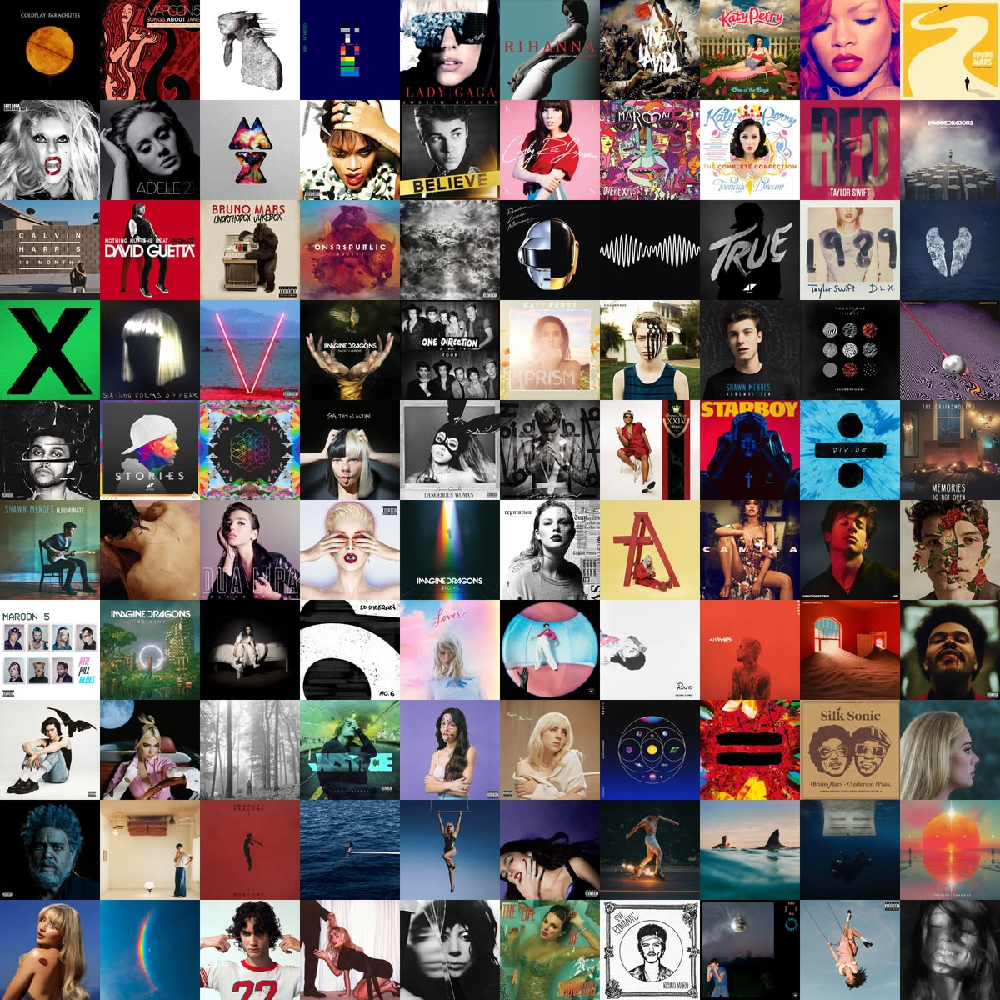

Une actualité propre à votre univers
Publié le .
Développez ici une information réellement utile.
La musique pop est un genre musical apparu dans les années 1950 aux États-Unis et au Royaume-Uni. Caractérisée par des structures simples en couplet-refrain et des mélodies très accrocheuses, elle cherche avant tout à être accessible au plus grand nombre. Ce genre extrêmement fluide se réinvente sans cesse en empruntant des éléments au rock, à l'électronique ou au hip-hop, et a été façonné au cours des dernières décennies par des icônes mondiales Michael Jackson, le roi incontesté de la performance scénique, du spectacle visuel et du perfectionnisme musical. Madonna, la reine absolue de la réinvention de soi, brisant les codes esthétiques et sociétaux à chaque décennie. Taylor Swift, la maîtresse de la narration et de l'écriture de textes, capable de fidéliser une communauté mondiale unique. Beyoncé, le symbole de la puissance vocale et des albums concepts visuels, redéfinissant la culture pop moderne. The Weeknd, le génie des mélodies rétro et de l'ambiance cinématographique, mélangeant pop moderne et sonorités sombres des années 80.

Publié le .
Développez ici une information réellement utile.